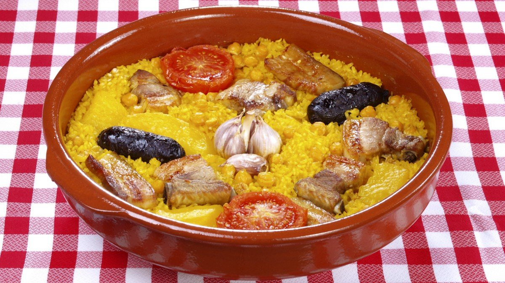
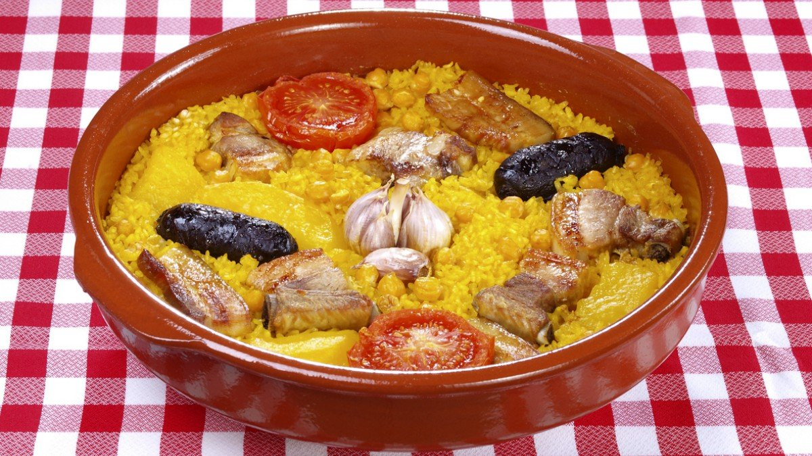
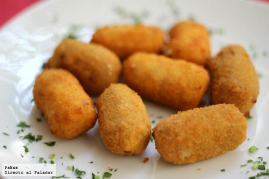

Arroz al horno
El populat y tradicional arroz al horno valenciano.
Ver la recetaEl populat y tradicional arroz al horno valenciano.
Ver la recetaLas natillas caseras de la abuela de toda la vida.
Ver la receta
Las croquetas más sencillas y ricas del mundo.
Ver la receta